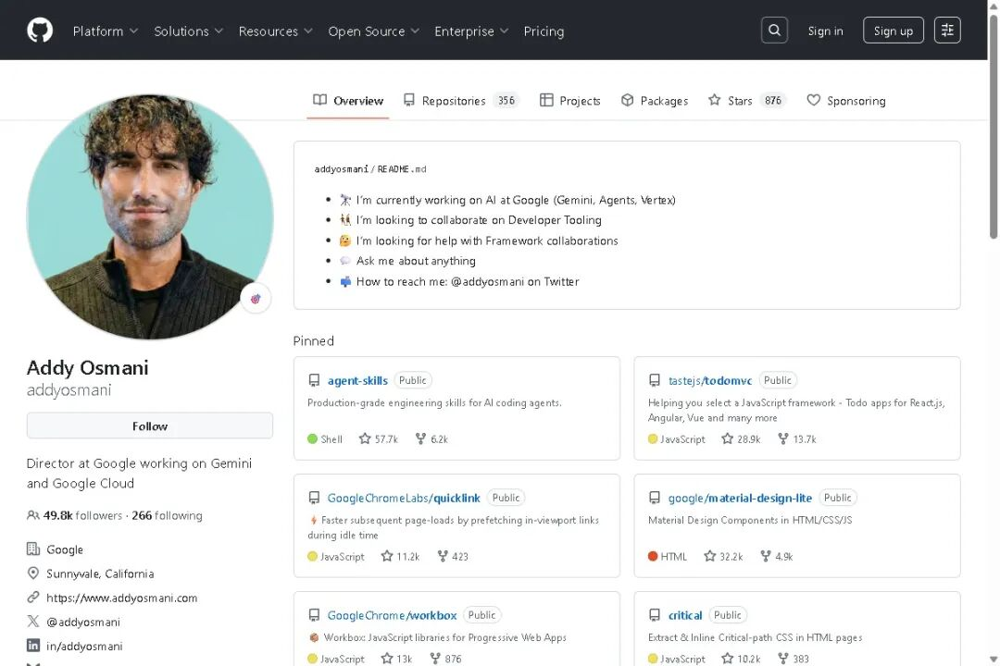
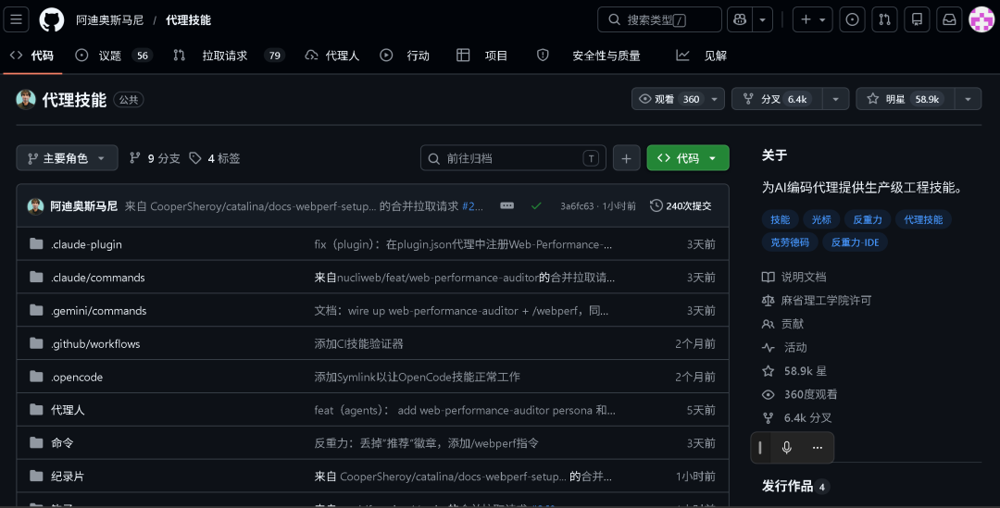
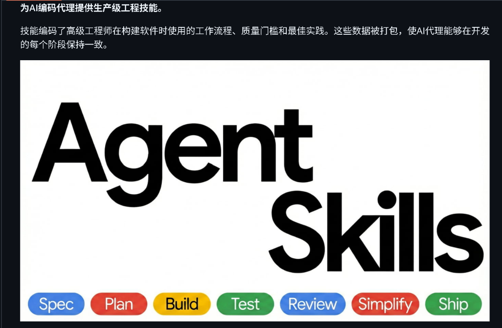
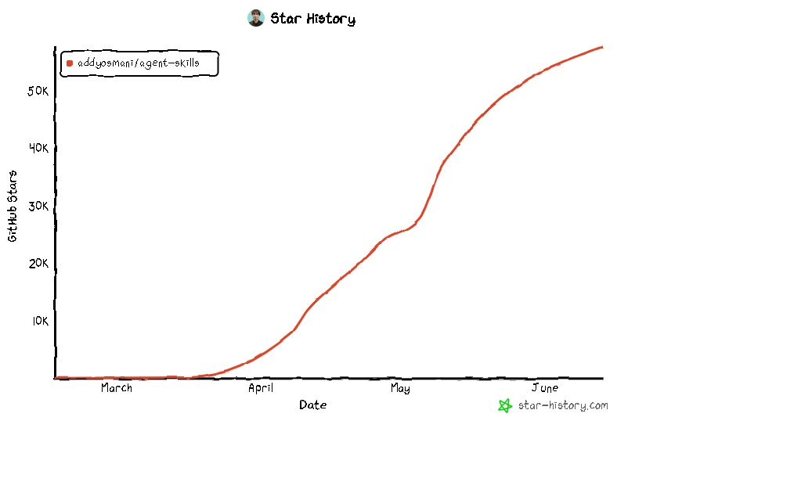

GitHub上有个项目在疯传？
Google Cloud AI部门总监写了一套"AI操作手册"，
让AI按工程师的方法论写代码——先出方案、再写代码、写一段测一段、测完才提交。
一个刚学会写代码的东西，现在有了"操作规范"。
这不是一个普通项目。它抛出一个问题让整个圈子在吵：
如果AI学会了工程师的作业流程，程序员的饭碗还稳吗？
1️⃣ 它到底是啥
项目叫 Agent-Skills，本质是一套 CLAUDE.md + AGENTS.md 文件，给AI编了24项技能：
作者是谁

Addy Osmani，Google Cloud AI 部门总监:
此前在 Chrome 团队待了14年，负责 Chrome DevTools、Lighthouse（网页性能检测工具）和 Core Web Vitals。
他是前端开发圈的大神，写过好几本技术书（《Learning JavaScript Design Patterns》《Leading Effective Engineering Teams》），GitHub 上有大量开源项目，在开发者群体里影响力极大。
简单说：这是 Google 内部教工程师怎么写好代码的方法论，被他打包成了一套AI技能包!
/spec— 先想清楚再动手/plan— 拆成小任务，一步步来/build— 写一点测一点，不堆屎山/test— 测试不过不算写完/review— 代码审查/ship— 确认无误再上线
每项技能都有步骤、有检查点、有"别偷懒"硬性要求。AI必须按流程走，跳过就报警。
项目上线几个月，58.9K星标、6.4K fork，增长速度离谱

2️⃣ 为什么吵起来了
正方：AI正在取代初级程序员
你想想，一个实习生进公司，要花多久才能学会你们团队的代码规范、测试流程、Review标准？三个月？半年？
Agent-Skills 把这些直接写进AI的"出厂设置"。新人搞不定的代码审查、安全审计、性能优化，AI按流程走一遍就出结果。
已经有团队在用了：Claude Code 装了这个技能包，写代码的质量肉眼可见地提升——测试覆盖率上去了、代码评审通过率高了、线上bug少了。
如果AI能做到"一个有3年经验的程序员的产出"，公司为什么要招一个3年经验的？一个员工要工资、要社保、要休假。AI不用。
反方：代码能跑和软件能做是两回事
也有人说：你们想多了。
Agent-Skills 再厉害，它也只是个流程框架。它不知道业务逻辑是对是错，不理解产品为什么要这么做，更不可能替产品经理做决策。
代码能跑 =/= 软件能做。ChatGPT写个计算器分分钟，但你让它写一个支持百万用户的支付系统试试？
还有人说：这个项目恰恰证明了程序员不可取代——你注意到没有，这个项目本身就是一位写了25年代码的资深工程师做的。
AI没有"教AI写好代码"的能力，最后还是得人来做。
3️⃣ 想试试？一分钟装好
如果你用 Claude Code，装这个技能包最简单：
/plugin marketplace add addyosmani/agent-skills
/plugin install agent-skills@addy-agent-skills
装好后敲 /spec 让AI先出方案，敲 /build auto 自动拆任务写代码。
支持 Cursor、Gemini CLI、GitHub Copilot、OpenCode 等主流AI工具，具体方法去 GitHub 看文档。
不想折腾的，看到这里就够了——上面聊的内容跟你也有关系。

💬 聊聊
写这篇文章的时候，我在几个群里问了同一个问题：
"你用AI写代码，出了bug会怪AI还是怪自己？"
结果挺有意思的。大部分人第一反应是"肯定是AI写的烂"——但追问下去，发现90%的情况是自己需求没说清楚。
AI只是按指令执行，它没有"常识"来判断你说的东西对不对。
Agent-Skills 这项目解决的问题就是这个：不是让AI更聪明，而是让AI更规范。
但这也引出另一个问题——
假如有一天，AI写代码的质量稳定超过普通开发者。公司招人的标准会变成什么样？
要我说，未来程序员的核心竞争力不会是"会写代码"。代码AI能写。
但"知道该写什么"、"知道什么不该写"、"能把说不清的需求翻译成代码"——这些才是值钱的能力。
你不是在和AI竞争。你是在和那些会用AI的人竞争。

评论区聊聊，你现在用AI写代码吗？你觉得5年后，初级程序员还找得到工作吗？
视频分享:
📚 相关资源：
GitHub 仓库：https://github.com/addyosmani/agent-skills
作者官网：https://addyosmani.com
觉得有用？关注公众号「贾队长元」，每周推荐免费省钱的工具。
想第一时间收到这类工具，扫码进群↓↓↓
我是贾队长元，平时就爱分享 GitHub 上免费的开源项目。
如果你觉得这个项目对你有用，去 GitHub 上给作者点个 Star。
既然看到这里了，顺手点赞、在看、转发，谢谢你的支持。